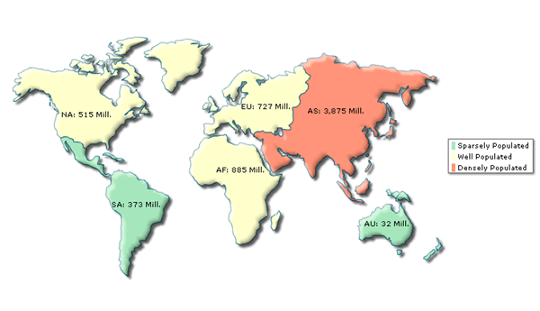
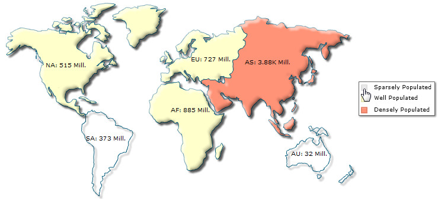

| Using Color Range to define data range and colors | ||||||||||||
In our previous population example, when we were providing data for each entity of the world map, we were not distinguishing each entity based on colors. Effectively, this didn't enhance the visual interpretation of data. But, FusionMaps XT allows you to use color ranges to distinguish various entities based on their data. Using color range, you can classify your data into sections, with each section having a different name and color to differentiate from each other. These sections are called color ranges. For each color range, you'll have to specify the minimum and maximum values, and the hex color code for the range. Let's say we wanted to divide the World Continent Population into three groups as under: |
||||||||||||
|
||||||||||||
|
From our above table, we can clearly define three color ranges as under:
|
||||||||||||
Now, for each color range, we can select the following properties:
Each color range should have its own unique range value, displayValue and code. Starting FusionMaps XT, use of color as the unique hex color code in <color> element is deprecated . Use code instead. However, if you use color it will work fine as earlier. It is recommended that you use code. Let's now implement the color range concept in our World Population Map. We'll follow the above defined range and color "Sparsely Populated" continents in green, "Well Populated" continents in yellow and "Densely Populated" continents in red. To do so, create a new XML file named as ColorRange.xml, with the following XML data: |
||||||||||||
<map borderColor='005879' fillColor='D7F4FF' numberSuffix='Mill.' includeValueInLabels='1' labelSepChar=': ' baseFontSize='9'>
<colorRange>
<color minValue='0' maxValue='500' displayValue='Sparsely Populated' code='A7E9BC' />
<color minValue='500' maxValue='1000' displayValue='Well Populated' code='FFFFCC' />
<color minValue='1000' maxValue='5000' displayValue='Densely Populated' code='FF9377' />
</colorRange>
<data>
<entity id='NA' value='515' />
<entity id='SA' value='373' />
<entity id='AS' value='3875' />
<entity id='EU' value='727' />
<entity id='AF' value='885' />
<entity id='AU' value='32' />
</data>
</map> |
||||||||||||
The only difference in this data (from the previous one) is the introduction of new <colorRange> and <color> elements. The <colorRange> element encapsulates the definition of all color range. And, individual color ranges are defined using the <color> element which can assume the following attributes:
|
||||||||||||
|
Here, we've defined our 3 color ranges in the XML. When you now view the map, you'll see the following results:  |
||||||||||||
| Bingo! - As you can see above, each continent has been colored according to its data value (which falls in one of the defined ranges). Also, a legend has now appeared on the map indicating the string representation of each color range. You can customize the properties of this legend using various attributes of <map> element described in "XML Attributes" section. | ||||||||||||
Note: If any entity's data doesn't fall into any of the defined color range, it takes the color defined in fillColor attribute of <map> element (or it's default value if this attribute is also not defined). |
||||||||||||
| Legend Interactivity | ||||||||||||
|
Starting FusionMaps XT, Legend is also interactive. You can click on a legend item to hide or show all the cells mapped with the color range represented by the legend item. For example, you may want to hide the numeric range 0-500. Click on the icon labeled as "Sparsely Populated ". The map will show blank dataplots only with the border for the numbers residing in that range. Any data value not present in that range will be visible. A sample map is shown below: | ||||||||||||
|
 |